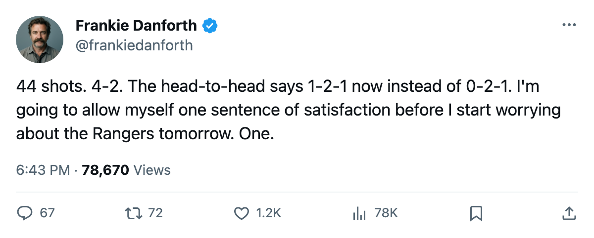
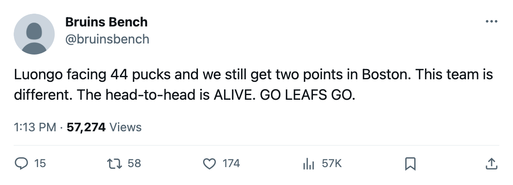

BOS
BOS NYR
NYRDANFORTH: Code Green, 44 shots against, and the head-to-head finally moved
Toronto won 4-2 at Boston on a night the Bruins fired 44 pucks at Luongo. The number that kept me up now reads 1-2-1.
 Frankie DanforthColumnist · Queen City Telegram
Frankie DanforthColumnist · Queen City Telegram
Code Green

Boston put 44 shots on goal and  Toronto Maple Leafs won 4-2 on the road.
Toronto Maple Leafs won 4-2 on the road.  Roberto Luongo95 faced every one of them. That's the game.
Roberto Luongo95 faced every one of them. That's the game.
I spent the last three weeks writing about 0-2-1. The head-to-head against Boston, the only series in this division where the season math actually bites, sat at zero wins through 3 meetings. Two regulation losses, an overtime loss at home on January 7. I wrote about it on Friday. I wrote about it on Monday. I got tired of writing about it.
Now it reads 1-2-1. Toronto took 2 points in Boston's building with a shot differential of minus 16. The gap didn't close, but the bleed stopped.
The standings after Tuesday: Toronto 68 points in 43 games, Boston 52 in 42. That's a game in hand and a 16-point cushion, except I'm not going to subtract in front of you. The number I'll print is 68. The number across from it is 52. You can do the rest.
What keeps this honest is the volume. 44 shots on a goaltender who has started 23 of 43 games this season. Luongo is carrying the load the committee assigned him. Maxime Ouellet86 has 10 starts, Mikael Tellqvist73 10 but hasn't dressed since the committee trimmed to two, and Luongo skates in 21 of those 43 at 60.3 minutes a night when he's in. The machine works because the top of it is elite. The rest of it is a problem for April.
Tomorrow the Rangers come in hot. Seven straight wins, 62 points in 45 games, the Atlantic's second seat. Toronto's record against New York this season: 3 wins, 0 losses, 0 overtime losses, 15 goals for to 7 against. The Rangers are the hottest team in the conference outside this room, and they've lost every meeting this club has played them. That's not nothing. That's also 3 games in November and December, and Tuesday night proved that a 3-game sample can look like invincibility until someone puts 44 shots on your goaltender.
The lineup shifted in Boston.  Ramzi Abid79 and
Ramzi Abid79 and  Pavel Brendl83 came into the bottom six. Konstantin Koltsov75 and Scottie Upshall80 came out. Four forwards swapped, all four lines intact. The fourth line isn't a tax tonight.
Pavel Brendl83 came into the bottom six. Konstantin Koltsov75 and Scottie Upshall80 came out. Four forwards swapped, all four lines intact. The fourth line isn't a tax tonight.
Panic Meter stays green. The only thing I still want fixed is the head-to-head. It moved. It didn't turn.
 Marian Gaborik99 played 22.2 minutes, logged 14 points in 23 games since coming back, and sits at 99 overall with the Bureau's Index pulling him +11 above his base. The teenager problem is handled. The fourth-line problem, the goaltending depth problem, the Boston head-to-head problem: those are January's work.
Marian Gaborik99 played 22.2 minutes, logged 14 points in 23 games since coming back, and sits at 99 overall with the Bureau's Index pulling him +11 above his base. The teenager problem is handled. The fourth-line problem, the goaltending depth problem, the Boston head-to-head problem: those are January's work.

